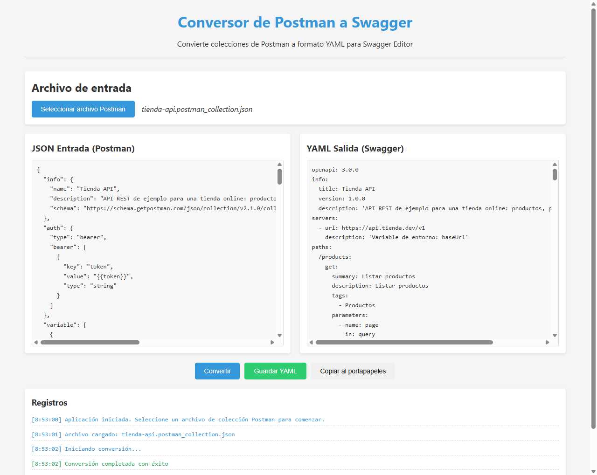

Conversión en un clic
Transforma colecciones Postman v2.1 en un documento OpenAPI 3.0.0 en formato YAML.
Código abierto · MIT · v1.0.0
Carga tu colección de Postman y obtén una especificación OpenAPI 3.0 en YAML, lista para pegar en Swagger Editor. Rutas, parámetros, cuerpos, esquemas y autenticación incluidos.

En Postman, Export → Collection v2.1. Obtendrás un archivo
.postman_collection.json.
Selecciona el archivo, revisa el JSON formateado y pulsa Convertir.
Guárdalo como .yaml o cópialo al portapapeles e impórtalo en
Swagger Editor.
Instaladores para Windows, macOS y Linux. Todo el proceso es local: tu colección no sale de tu equipo.
Reaprovecha el trabajo que ya hiciste en Postman para tener una documentación OpenAPI sin escribirla a mano.
Transforma colecciones Postman v2.1 en un documento OpenAPI 3.0.0 en formato YAML.
El JSON de entrada, formateado, y el YAML de salida en la misma ventana para compararlos.
A partir de los ejemplos JSON de tus peticiones genera esquemas con tipos (integer,
number, boolean, arrays y objetos anidados) y ejemplos.
Bearer, Basic, API Key y OAuth2 se traducen a securitySchemes, a nivel global o por
endpoint.
Cada carpeta de la colección se convierte en un tag, con su descripción, para agrupar endpoints.
Exporta a .yaml/.yml con el diálogo nativo o cópialo al portapapeles.
| En Postman | En OpenAPI 3.0 |
|---|---|
| Nombre y descripción de la colección | info.title · info.description |
Variables con url o base en el nombre (p. ej. baseUrl) |
servers |
| Carpetas | tags |
| Peticiones (método + ruta) | paths con su operación y summary |
Segmentos :id |
Parámetros in: path obligatorios |
| Query params | Parámetros in: query |
Body raw JSON · texto |
application/json con esquema inferido · text/plain |
Body form-data · x-www-form-urlencoded |
multipart/form-data · application/x-www-form-urlencoded |
Auth de la colección · de una petición · noauth |
security global · por operación · security: [] |
Una petición Crear pedido con cuerpo JSON y la colección protegida con Bearer genera, entre
otras cosas:
Postman (body raw JSON)
{
"customerId": 42,
"items": [
{ "productId": 7, "quantity": 2 }
],
"notes": null
}OpenAPI (components)
CrearPedido:
type: object
properties:
customerId:
type: integer
example: 42
items:
type: array
items:
type: object
properties:
productId: { type: integer, example: 7 }
quantity: { type: integer, example: 2 }
notes:
nullable: true
type: string
securitySchemes:
bearerAuth:
type: http
scheme: bearer
bearerFormat: JWTCapturas reales de la aplicación convirtiendo una colección de ejemplo («Tienda API») con carpetas, parámetros de ruta y query, cuerpos JSON y autenticación Bearer. Haz clic para ampliar.
info, servers y
paths generados a partir de la colección.
Última versión: v1.0.0
Instalador .exe · 64 bits
~97 MB
Imagen .dmg · Apple Silicon
~88 MB
Ejecutable .AppImage
~98 MB
¿Prefieres ver todos los archivos? Todas las versiones en GitHub.
SmartScreen puede avisar de que el editor es desconocido porque el instalador no está firmado. Pulsa Más información → Ejecutar de todas formas.
Si Gatekeeper bloquea la app, ábrela con clic derecho → Abrir, o ejecuta
xattr -cr "/Applications/PtS Converter.app".
Dale permisos de ejecución al AppImage:
chmod +x PtS.Converter-*.AppImage y lánzalo con doble clic.
git clone https://github.com/cmurestudillos/postman-to-swagger-converter.git
cd postman-to-swagger-converter
pnpm install
pnpm start # ejecutar en desarrollo
pnpm package:win # generar instalador de Windows
pnpm package:mac # generar imagen de macOS
pnpm package:linux # generar AppImage
Requisitos: Node.js 22.12+ y pnpm 11+. Los instaladores se generan en release/.
Haz clic en los tres puntos de la colección → Export →
Collection v2.1 (recomendado). Se guarda un archivo .json.
Pulsa Seleccionar archivo Postman y elige el .json. El contenido aparece
formateado en el panel JSON Entrada y se habilita el botón Convertir.
Pulsa Convertir. El documento OpenAPI aparece en el panel YAML Salida y el panel de Registros indica si la conversión ha ido bien.
Guardar YAML abre el diálogo nativo (por defecto swagger-definition.yaml);
Copiar al portapapeles lo deja listo para pegar en
Swagger Editor.
summary.baseUrl para
obtener servers.
Las respuestas se generan con descripciones estándar (200, 400, 401, 404, 500); los ejemplos de respuesta
guardados en Postman no se convierten todavía. Los parámetros de ruta y query se tipan como
string y los esquemas de arrays se infieren a partir del primer elemento.
├── main.js # proceso principal: ventana, diálogos e IPC
├── preload.js # puente IPC seguro (contextIsolation activo)
├── renderer.js # interfaz: carga, conversión, guardado y logs
├── index.html # estructura de la ventana
└── src/
├── converter.js # lógica de conversión Postman → OpenAPI
├── models/ # PostmanCollection y SwaggerDocument
└── utils/ # utilidades de archivos y YAMLConstruida con Electron, js-yaml para generar el YAML y Lodash. Sin frameworks de UI: HTML, CSS y JavaScript.
Los issues y pull requests son bienvenidos. Abre un issue describiendo el bug (si puedes, adjunta una colección mínima que lo reproduzca) o la funcionalidad que echas de menos.